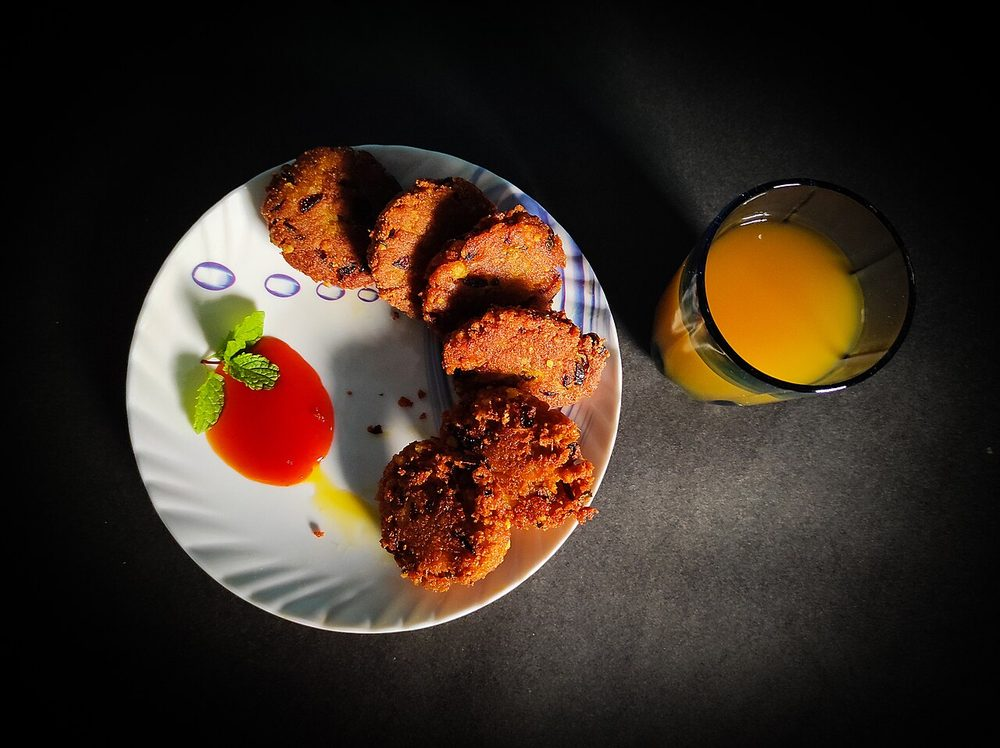

Allergens: none of the ten listed below
Ingredients
Quantities for 4.
- 700g, boiled the day before and grated Potatocold, dry potato is the whole trick
- 3 tbsp Cornflour
- 2, chopped Green Chilli
- 1 tbsp, grated Ginger
- 1 tsp Cumin Powder
- 1 tsp Coriander Powder
- 1 tsp Amchur
- 1 tsp Chaat Masala
- a handful Coriander Leavesoptional
- 6 tbsp Neutral Oil
- to taste Salt
Cookware
stovetop, tawa
Checked against the ingredient list for ten allergens: milk, egg, fish, crustaceans, tree nuts, peanuts, sesame, mustard, soy and gluten. Brands vary, so read the label on anything new to you.
Before you start
- Boil the potatoes a day ahead and refrigerate them unpeeled. Warm or freshly boiled potato holds water and the tikki spreads in the pan.
- Grate rather than mash. Mashing develops starch and gives a gluey patty.
Method
- Grate the cold potatoes coarsely. Do not mash.
- Mix in the cornflour, chilli, ginger, ground spices, coriander and salt with a light hand.Work it as little as possible.
- Shape into 8 patties about 2cm thick and chill 20 minutes.Chilling firms them so they hold in the pan.
- Heat oil on a tawa over medium heat and lay the tikkis in without crowding.
- Cook 5 minutes a side without moving them. Turn once only.Moving them early tears the crust that is forming.
- Press gently at the end to crisp the edges, dust with chaat masala and serve with both chutneys.
Storage
Best hot. The shaped raw patties keep 2 days refrigerated and fry better cold; cooked tikkis reheat well in a dry pan.
Nutrition Medium estimate
Low protein: 4 g a serving, 4% of the calories
| Per serving216 g | Per 100 g | |
|---|---|---|
| Calories | 374 kcal | 173 kcal |
| Protein | 4.1 g | 2 g |
| Carbohydrate | 43.9 g | 20 g |
| of which sugars | 2.5 g | 1 g |
| Fibre | 4.5 g | 2 g |
| Fat | 21.0 g | 10 g |
| of which saturated | 2.2 g | 1 g |
| of which unsaturated | 17.9 g | 8 g |
Ingredients given to taste count as zero, so the real figures run a little higher. Nearest database match used for amchur, chaat masala. Estimated from raw ingredients using USDA FoodData Central.
More like this: Vegan Indian recipes · Vegetarian Indian recipes · Gluten-free Indian recipes · Dairy-free Indian recipes · No onion no garlic recipes · Punjabi recipes
Times, yields, allergens and nutrition are guidance. Use your own judgement on doneness and on storing. More in About.